孖仔帮
公众号ID：twinsbang
关注
文|圆圈妈
网图|侵删
有没有最近正在坐月子的双胞胎妈妈？有多少？请在文末点赞报个到。
我想捎去我最诚挚的问候：这么热的天坐月子，请问，你可安好？
上个月圆圈生日，引起一片回忆杀，朋友圈一张照片，特别戳痛点，坐月子的那些狼狈不堪和惨不忍睹，瞬间历历在目。
今天8月26日，5年前的今日正是我出关的日子，感慨万千，唯有泪千行，这篇来分享。
温馨提示：最近准备生娃的孕妈不要看，担心有阴影，正在坐月子的宝妈也不要看，担心引起共鸣，边看边抹泪。
#分娩当天#
晚上7点多，刚下手术台，血压飙到180，护士用秋风扫落叶的速度，往我嘴里塞了降压药，迅速搬来心电监护仪，扎管子，打点滴，压沙袋...
6小时的去枕平躺，禁食禁水才刚开始，我已经很饿，很渴，很累...想睡，想吐，想咳嗽…
此时麻醉药效还没过，只是隐约感觉脚趾头可以动一下，伤口好像有点知觉，会麻，会疼...整个人都是昏昏沉沉的，似睡非睡。
很快，麻药完全失效了，唯一的感觉是疼+疼+疼...稍微动一下都疼得龇牙咧嘴！
想不到更痛的还在后头…
半夜，护士进来按肚子，还没等我反应过来，一阵痛楚像腰斩一样，虚弱的我发出一声凄厉的惨叫，响遍整个爱婴区，被护士训了一顿，说吵到隔壁床的产妇了。
撤掉沙袋后， 我一口气秒喝了一大杯水，不小心呛到，咳嗽了下，震动到伤口，疼得差点背过气，无法呼吸了。
我太疼了，数次哀求护士给我打麻药，狼狈得像个发作的瘾君子，抓狂，嚎叫，没有尊严，只想解脱！
圆圈爸跑护士站跑了好几趟，终于在凌晨4点多，要来了止痛针！
果然神丹妙药，疼痛缓解不少，我终于安静了。
#分娩第二天#
一大早，护士给我量血压换吊瓶，并叮嘱我要多翻身，不要一直躺着。经历昨晚按肚子的惨痛，我对护士言听计从。
简直没法去形容翻身那种痛，翻身一秒钟的时间，在此刻竟然有一光年那么长。
刀口以下的部位感觉都不是自己的了，根本不听使唤了，稍微挪动下都痛到锥心刺骨，翻身一次，就跟下地狱一层似的。
还好，经过多番练习，扶着围栏自己把握翻身的角度和幅度，从仰卧翻到了左侧卧，慢慢找到感觉，也没那么疼了！
因为还没有排气，只能喝点米汤，好饿，看着圆圈爸大口地吃肉，好羡慕。
下午，在新生儿科工作的朋友发来圆圈兄弟的照片。
第一次看到他们的照片，我都激动得说不出话，看了很久都舍不得放下，所有的疼痛都瞬间“第二件半价”了。
#分娩第三天#
依然还没有排气，感觉很虚，是那种饿了三天三夜滴水未进的有气无力。
早晨，医生查房发现我肚子发胀，说有肠气，不能多吃，意思是我连米汤都要悠着点喝。
上午拔掉尿管后迎来术后最大的挑战：产后第一次下床！
从床上坐起来的那一瞬间，有种天旋地转的感觉。为防止我摔倒，圆圈爸和小姑子一人一边把我整个人架起来了。
当双脚找到感觉，慢慢地着地，缓缓地站起时,“啊...”的一声仰天大叫...
疼！疼！疼！
撕心裂肺的疼！
余光中看到隔壁床的家属都替我疼，全都皱着眉头看着我疼。
维持着站立的姿势好几分钟后，我终于迈出了第一步，病床与卫生间才3米远的距离，我竟然走了10分钟。
下午，终于排气了，得到医生允许，疯狂喝了一大碗米汤，追加了一碗小米粥。
晚上，第二次下床，我已经不需要搀扶了，我放开圆圈爸的手臂，自己扶着床沿，一步步地往卫生间挪。
我想，我此刻的背影一定是如图所示，又a又飒，虽然内里弱毙了，依然咬牙坚持着。
#分娩第四天#
早晨查房，竟然低烧，护士问我是不是涨奶了，我下意识看了下乳房，原来这就是涨奶。
昨天就感觉乳房发胀不舒服，今日就有胀痛感，摸着很硬，时不时有黏糊糊的液体溢出来，床单都湿透了。
我让护士给我开了回奶药，溴隐亭吃下去后，很快就见效了，奶水减少了，乳房没那么硬了，也退烧了。
下午，新生儿科来电，说圆圆的肠胃不好，不能喝奶，B超显示是肠胃发育不完善，只能输液，打营养针。
晚上，又接到电话，圈圈也吐奶了，经检查也是肠胃发育不完善，只好输液。
好家伙，果然同根生，有难同当。
半夜，医院又传来消息，两人接连出现呼吸暂停的现象，让圆圈爸去签字，要上呼吸机！
那一晚，彻夜难眠，眼泪像断线的珠子，止不住地流！
我除了担心捉急，无计可施，刹那间明白，有一种心酸叫做心有余而力不足。
#分娩第五天#
新生儿科终于没有再来消息了，那就是好消息！
上午做B超复查。
去B超室只有100米，我拒绝圆圈爸的搀扶，自己扶着栏杆走了30分钟。
那是一种很废的感觉…无力无助！
B超显示，子宫愈合正常，没有残留物；意思是没啥事可以出院了。
一直心心念念的“出院”终于来了，可是我竟然想赖着不走了，隔壁楼就是新生儿科，那里有我刚出生还没抱过的儿子们，只想离他们更近一点。
然而此刻却...近在眼前，远在天边！
我可以吃面条，吃白米饭了，体力也渐渐恢复，可是这天半夜我又低烧了，血压也偏高。
不知是不是心里作用还是昨晚上哭的，我感觉眼睛看不清东西，有重影，头很晕，想睡，反胃…
更让人崩溃的是，有便意却拉不出来，不敢用力，怕撑裂伤口，急的我躲厕所崩溃大哭，情绪很狂躁…
圆圈爸看我难受，找医生开了地西泮，我没有拒绝。
也许只有安眠药，才能让我安静下来了。
#分娩第六天#
第一次探视，圆圈爸借来轮椅推着我去新生儿科，轮椅不好使，跌跌撞撞地磕碰到墙壁，震动到伤口，一股火辣辣的疼一阵阵地袭来。
隔着厚重的玻璃，远远地看到他们俩一人一个角落，都在哭，没人安慰；呼吸机已经撤掉了，头上还扎着留置针。
我捶着胸口，听到心碎的声音，没有妈妈在身边呵护的两个宝贝在里面是有多遭罪啊！
我的眼泪又刷刷地流，剖腹疼，按肚子疼，翻身疼，下床疼，涨奶疼，我都没哭，看到他们在里面哭，没人理…戳心窝啊。
一路哭着回病房！
那是产后第一次放肆的大哭，把保胎期间的郁闷，产时的恐惧，产后的疼痛，全部一次性哭出来了。
去他大爷的产后坐月子不能哭，哭完之后，我整个人都轻松多了。
只是没想到的是，我们娘仨一起哭的日子贯穿了往后的365个日日夜夜，不是偶尔，竟是常态。
#分娩第七天#
出院了！
再不走，走廊里等着床位的产妇家属估计要把我轰出去了。
七月的深圳，娃娃的脸，上一秒晴空万里，下一秒就变天了。
等车时，突然一场瓢泼大雨，我躲闪不及，抱着肚子，走不了，跑不动，没有伞，狼狈极了…说好的月子里不能淋雨，我竟然淋个落汤鸡。
坐上车，望着新生儿科的方向，久久不愿回头，
明明生的是双胞胎，手里却一个娃都没有，伤口疼，心更疼。
雨下了一会儿就停了，火辣辣的太阳很快又冒出来，想起了许美静的一首歌《阳光总在风雨后》...
是的，阳光总在风雨后，我的娃儿们在医生护士的精心治疗下，一定会早日康复，回到家人身边的。
我要做的是：回家狂吃，蓄势待发！
#分娩第二周#
出院后的第三天，迎来28岁生日。
愿望是：早日迎来产后第一便！
果然，产妇的生日愿望都很灵，就在第二天，终于，千呼万唤屎出来，从来没觉得顺利解大便是一件多么幸福的事情。
为不用拉去灌肠而庆幸，我终于可以大口吃肉了。不用喂奶，没有饮食顾忌，我像头饿狼一样，每天一只鸡下肚，吃到渣都不剩。
想念儿子？还不如化思念为饭量，早日恢复体力，迎接他们归来。
分娩第11天，圆圆出院了。
分娩第13天，圈圈也回来了。
两兄弟终于团聚了！
看见他们那一刻，感觉像吃掉了会微笑的糖果，可是很快又像被点了哭穴一样，眼泪像断线的珠子，瞬间泣不成声！
我趴在床沿，盯着两只小肉团，看了一个下午，仿佛做梦一样，身边突然多了两个儿子，我竟然无所适从了。
刚出院回来的他们都特别乖，前两天几乎都在睡，连喝奶都没睁开眼睛，只见嘴巴在吧嗒吧嗒地吸吮，喝完奶也不哭闹，还没拍嗝就秒睡。
我们都受宠若惊，竟然遇上两个天使宝宝。
可是很快被打脸了。
出院回来的第三个晚上，他们哥俩终于露出"混世魔王”的原形，轮流开启轰炸模式。
他们的作息完全混乱，不分昼夜。
晚上8点吃一次，不到10点就醒来要吃，接着是凌晨12点又要吃；
有时会吃完了就睡，有时吃完不睡，微闭着眼睛，吐舌头；
或者吃着奶就睡了，把奶嘴拔出来又醒了，重新塞回去又懒洋洋地吸几口；
闭眼睡了20多分钟，马上就开始哼唧唧，可能是没有拍嗝就放下，睡了一会儿，就吐奶了；
最大的问题是作息不同步。
经常是这个喝完奶睡了，另一个睡醒要喝奶了；
好不容易给这个喂了奶哄睡了，奶瓶子还没来得及清洗，另一个哭醒了吵着要喝奶了…
根本没有喘口气的机会，马上又要进入下一轮喂奶…
如此这般不断循环切换…冲奶粉，喂奶，洗奶瓶，冲奶粉…
中间还穿插了以下环节：换尿不湿*2，拍嗝*2，哄睡*2...
我，一个刚从鬼门关走一遭还极度虚弱的新手妈妈，伤口还没完全愈合，有时还低烧，血压也不稳定，基本上都是在床上度过的。
看到家人忙里忙外，两宝宝哭了都没空去安抚，我为自己帮不上忙，什么都做不了，还要人照顾感到很内疚，感觉自己很没用，很多余。
#分娩第三周#
坐月子进入到第三周，8个字形容：鸡飞狗跳，惨不忍睹。
公公婆婆，小姑子，圆圈爸，“4对2”的战略部署依然全军覆没，与俩娃恶战了3天3夜后，累到心力交瘁。
加之住处环境很恶劣，5大3小挤在20平方的小房子，只有两张床，圆圈经常被挤成一团，没有好觉可睡。
当时正是深圳的三伏天， 据说当时鸡蛋清液放在大马路上，不出一分钟就8分熟了。
而我躲在室内，没有空调，没有风扇，穿着长袖长裤，裹着头巾，带着帽子….冒汗….一直冒汗….
可能是汤水喝多了，溴隐亭停药后，奶水又如波涛汹涌般袭来，心想这要是能喂母乳可以省好大一笔奶粉钱呐，无奈只能看着每天的汗水与奶水齐飞...
我已经分不清身上总是湿哒哒的一大片到底是奶水还是汗水，总之全身没有一处是干爽的。
两宝宝的状态基本是：吃了睡、睡了拉、拉了哭、哭了吃，偶尔烦躁。
大人的状态是：累累累，经常烦躁。
所有人的睡眠都支离破碎。
所有人的情绪都剑拔弩张。
所有人的心态都濒临崩溃。
我和婆婆因为一件小事吵起来了，最后两败俱伤，都向着无辜的圆圈爸哭得荡气回肠。
她哭？这么辛苦被儿媳妇嫌弃，觉得委屈。
我哭？是一种心有余而力不足的自责，爱莫能助的心酸。
经济上无能为力，别说婴儿床，一处睡觉的地方都没有，他们怎么可能睡得香；
经验上对养娃一无所知，连冲奶粉都不会，他们怎么可能吃得好；
生活上太依赖别人，又不甘心示弱，倔强傲娇的我怎么可能放过自己！
这个坐月子，把自己身上之前从未发现或者刻意回避的丑陋，缺陷...暴露得体无完肤。
我无法接受的事实是：我想要完美，却没有完美的能力。
我承认，我崩溃了！
为何世界如此精彩绝伦，而我却暗无天日。
#分娩第四周#
说个事实，剖腹产真的很伤，直到分娩第四周，我才终于感觉元神归位了。
在过去的的20多天，伤口疼，拉尿疼，大便疼，后背疼，头疼，涨奶疼，腰疼…全身没有一处不疼，还有流不完的汗，道不出的累累累，还有说不出的烦躁，焦虑，自责，愧疚….
每天都在身体极度疲惫，情绪崩溃，道德煎熬中度过。
上刀山下火海，大概也不过如此了吧！
恢复精力后第一件事是抱娃，哄娃，奶娃，其他事我都不管，不理，不问...每天与两个小肉团互动，慢慢找到了一点当妈的感觉。
他们依然睡渣两枚，不分白天晚上，终日哼哼唧唧不肯入睡，或者睡不到半小时就醒来；
他们依然饭渣两枚，60ML的奶能喝60分钟，要么边喝边睡，要么边喝边吐；
而我，开启孕傻模式，依然会忘记冲奶粉的步骤，到底是先放奶粉还是先放温水。
产后第一次外出，我直奔理发店，把头发剪短了，意思是从头开始吧！
那天晚上，我把哼哼唧唧的两小子抱在怀里，其他人都睡了，太累了，不忍心打扰。
凌晨2点多，又闻到楼下烧烤店那股熟悉的油烟味，想起孕期时，经常一闻到烧烤味就作呕，此刻竟然觉得，那就是生活的气息啊。
往后的生活便是如此：熬最深的夜，操最大的心，哄最累的俩娃。
两小只蠕动几下就趴在我怀里安静地睡着了，看着窗外漆黑一片，我想起了《乱世佳人》的郝思嘉那句经典台词：明天又是新的一天tomorrow,tomorrow is another day。
坐月子结束了，这只是开始。
电视剧《三十而已》顾佳有段话非常戳泪点：
“我在出了月子的第一天，我突然感受到顾佳已经死了，活下来的是许子言的妈妈。
我经常看着许子言我就在想，他什么时候能快点长大，能一个人睡觉，一个人吃饭，能把我还给我。
事实上，是我离不开他。”
双胎孕期的心惊胆战和剖腹产的惊心动魄，不过是过往云烟，大抵会好了伤疤忘了疼，倒是坐月子的经历，才叫脱胎换骨，让我深刻感觉到，我不再是我，取而代之的是双胞胎圆圆圈圈的妈妈。
余生，不再是闲着无事仗剑走天涯...
而是，时刻用母爱当铠甲，拿勇气当盾牌，全副武装，只为给孩子们撑起一片天，呵护他们健康成长。
最后想对正在坐月子的妈妈说，当你觉得万念俱灰时，请相信“天下没有百受的苦。”人生中的种种考验终会过去，如同落花一般化为春泥，会孕育出加倍丰盛、美妙的生命！
鸡汤虽干，但很见效。
喜剧之王有句台词一直很鼓舞我，
“前面一片漆黑，什么也看不见。”
“也不是啊，天亮了就很美。”
是的！隧道尽头总有光。
走过黑暗，你便遇见另一个自己，
已经当妈的自己，
和自己一样倔强，
和自己一样坚强，
和自己一样努力。
-END-
今日互动话题
#吐槽下你的坐月子经历吧#
评论区聊一聊呗！
微信公众号：孖仔帮
ID : twinsbang
专注双胞胎孕育，养育，教育经验分享
扫码关注我们
点一下你会更好看耶
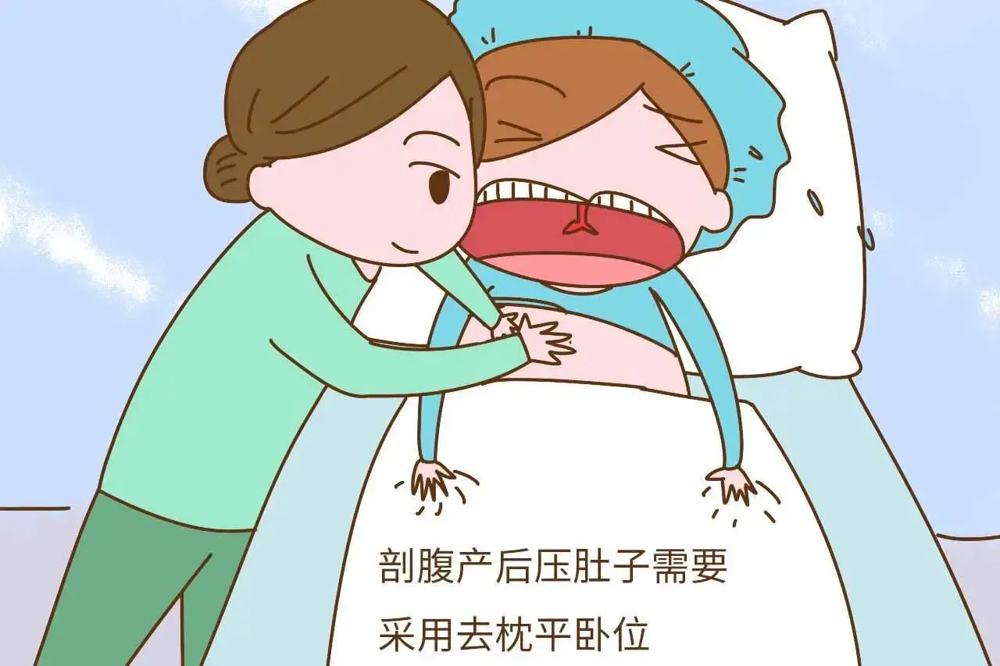
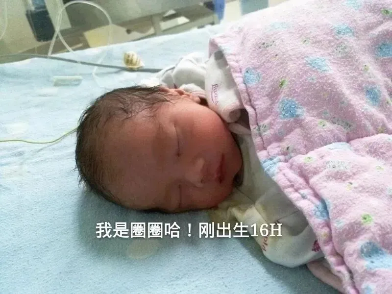
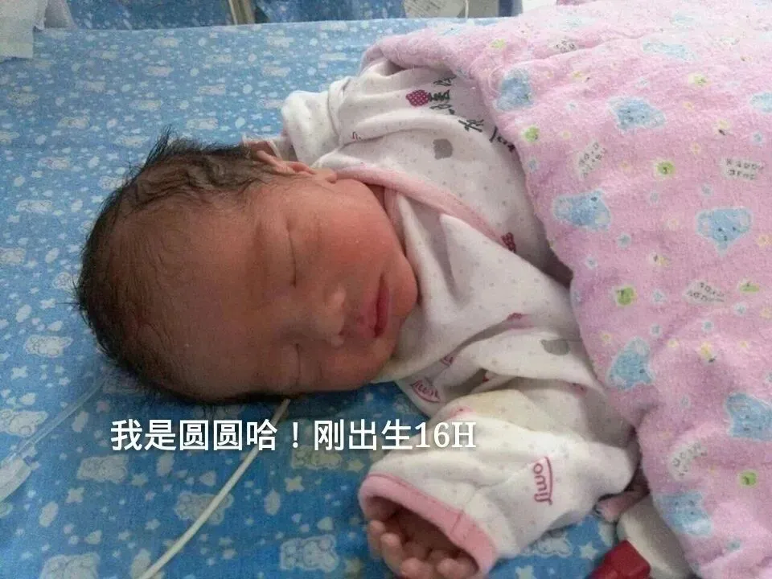
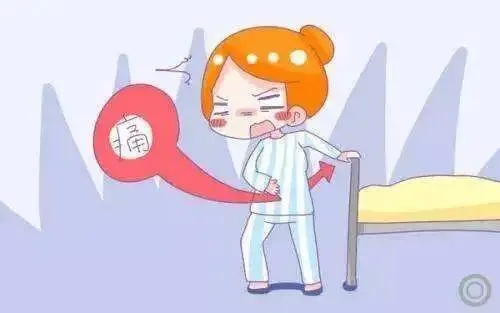
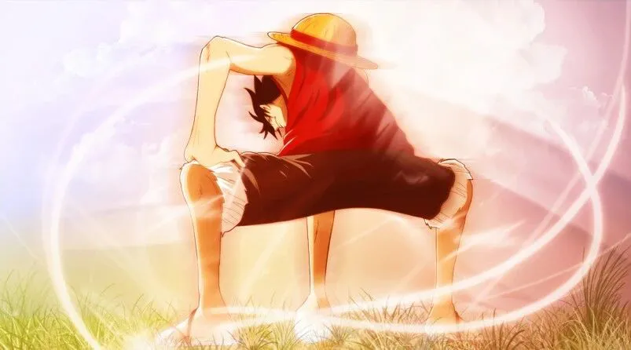
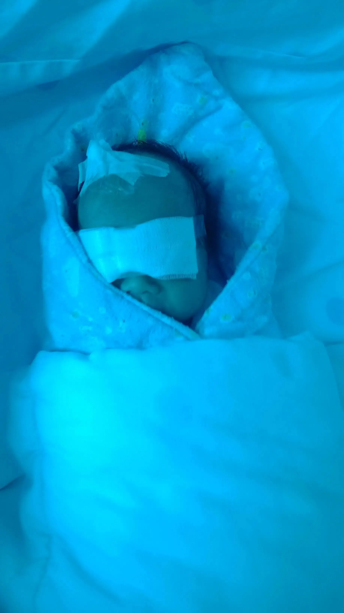
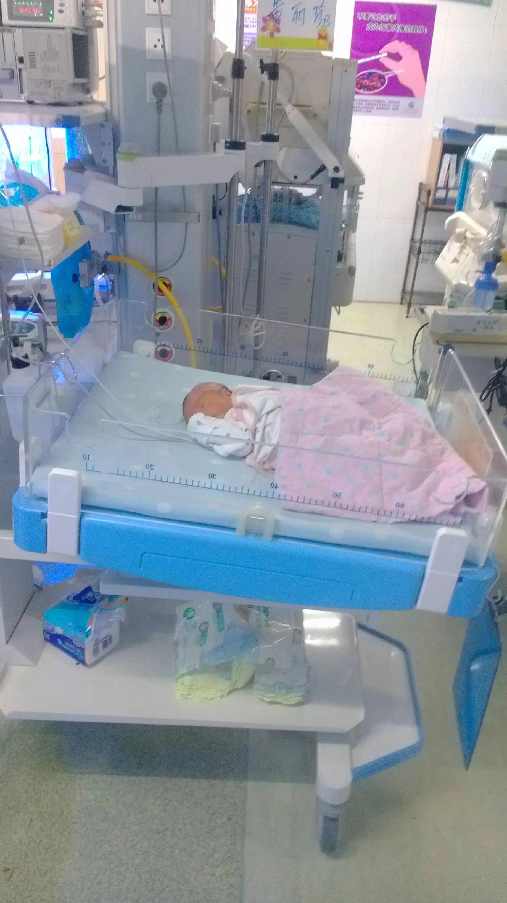
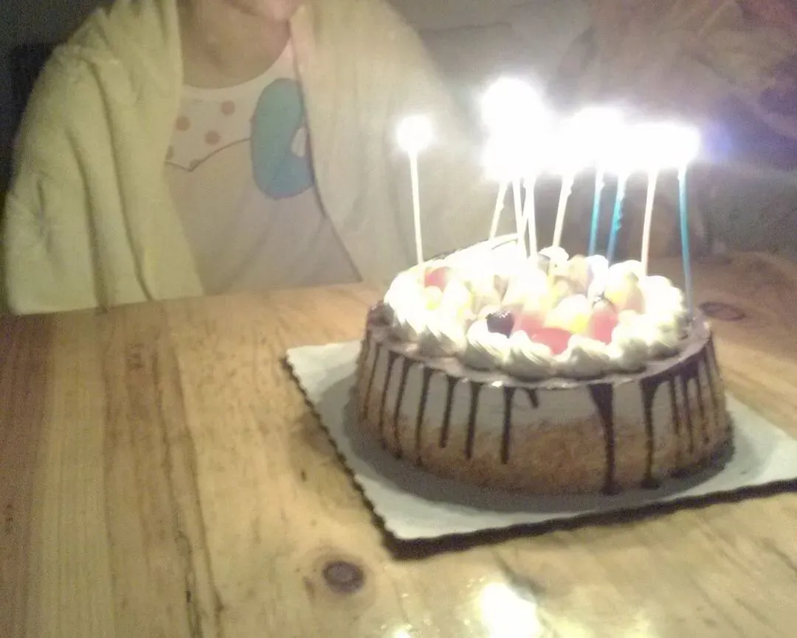
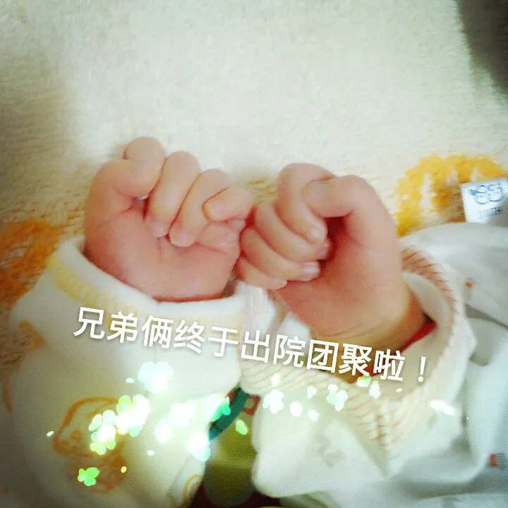
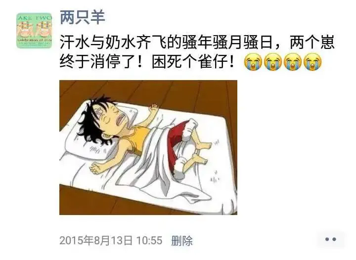
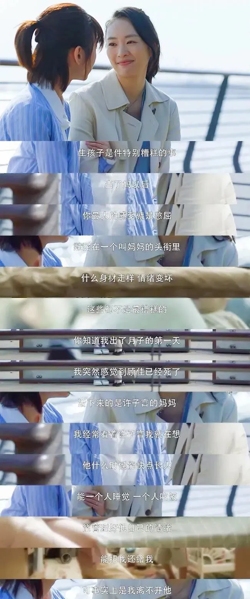
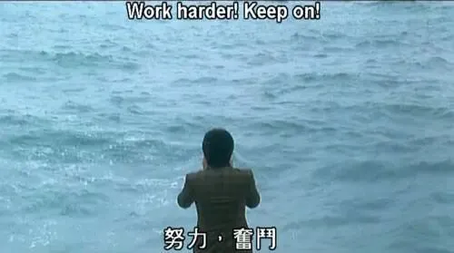